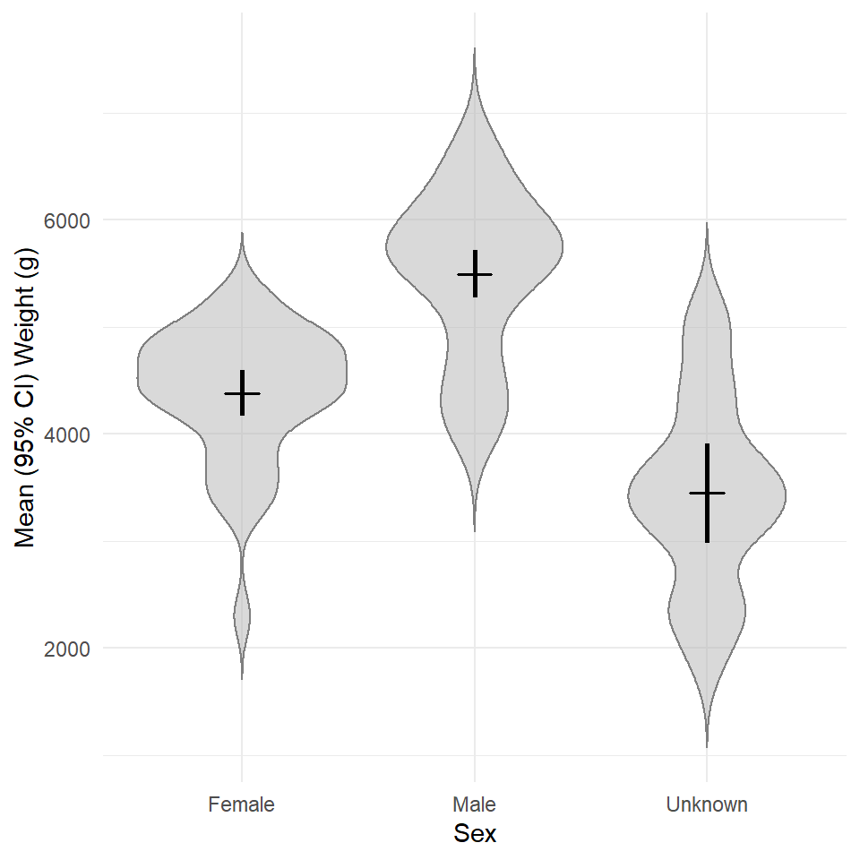
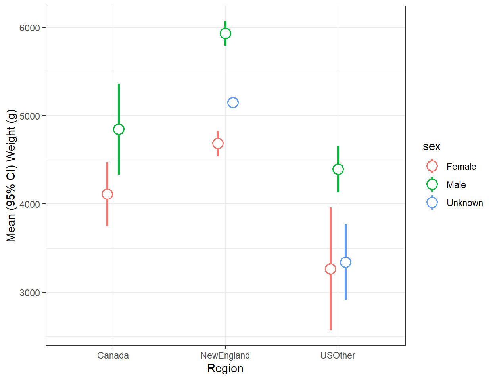
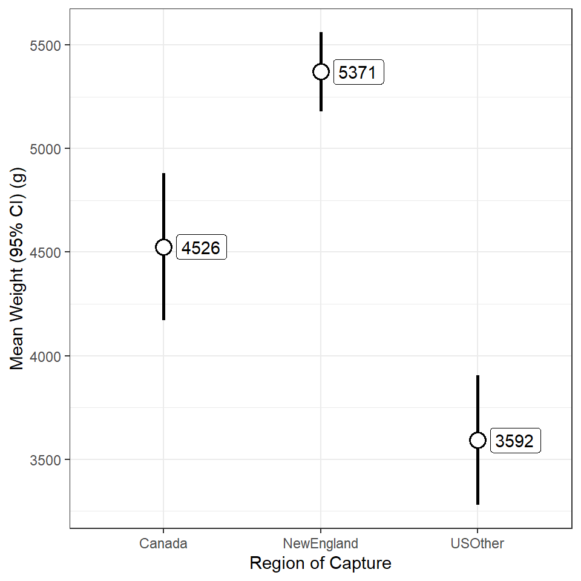
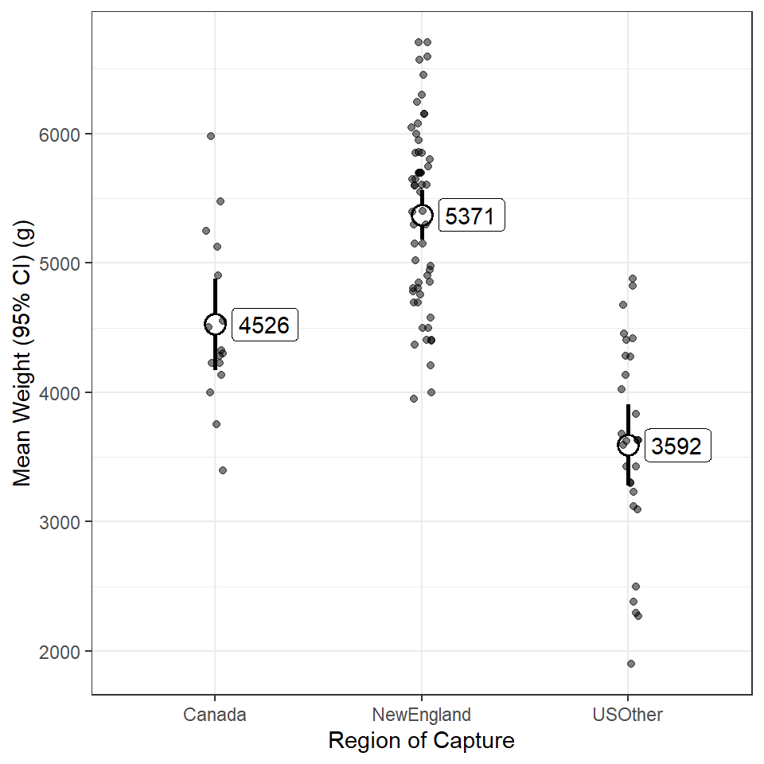

Background
 This is the same data set introduced here (which included code for accessing the data). If you did those exercises, then you can use the same data and package (e.g.,
This is the same data set introduced here (which included code for accessing the data). If you did those exercises, then you can use the same data and package (e.g., tidyverse) loading portion of your script. If you did not do those exercises then please see that page for the instructions on loading the data.
Weight by Sex
Construct ggplot2 code to match the graph below (as closely as you can).

Weight by Sex and Region
Construct ggplot2 code to match the graph below (as closely as you can).

Weight by Region 1
Construct ggplot2 code to match the graph below (as closely as you can). [HINT: You will need to use summarized data (mean and confidence interval values) to construct this plot.]

BONUS - Weight by Region 2
Construct ggplot2 code to match the graph below (as closely as you can). Hint: If you saved your plot from the previous section, you should be able to create this plot by “adding” one function of code to the saved ggplot object.
